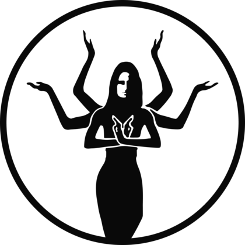

VEDANIE
ДРЕВНИЕ ЗНАНИЯ ДЛЯ ВОЗВРАЩЕНИЯ
К ЖИВОМУ СОСТОЯНИЮ
К ЖИВОМУ СОСТОЯНИЮ
ВЫБЕРИ
СВОЁ
СВОЁ
НАПРАВЛЕНИЕ
Бесплатные знания и программы восстановления VEDANIE. Найди первый шаг, который нужен твоему телу сейчас.
ГОРМОНЫ
И ЖЕНСКОЕ ЗДОРОВЬЕ
Энергия • баланс • возраст • женская система
ГОРМОНАЛЬНЫЙ ВОЗРАСТ МЕНОПАУЗА 35+ • 45+ • 55+ НАЧАЛО С 9 АВГУСТА ВОЙТИ В ПРОГРАММУ →
КИШЕЧНИК
И ПИТАНИЕ
Микробиом • иммунитет • кожа • энергия
СООБЩЕСТВО
ВЕДАНИЕ
Практики • знания • живое общение
ЭКСПЕДИЦИЯ
КАЙЛАШ
Тибет • путь • трансформация